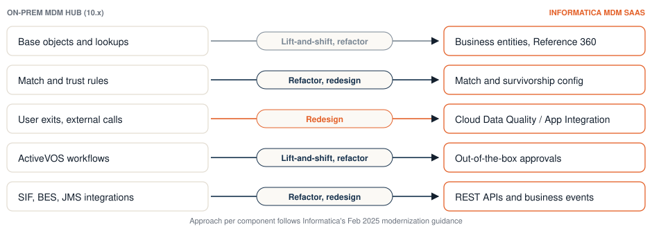

Moving your on-prem MDM Hub to Informatica MDM SaaS.
If you run Informatica Multidomain MDM on-prem, the hub is probably working and getting harder to keep current. Here is how a move to MDM SaaS works, what usually goes wrong, and how we price it before you commit.
What kind of MDM project is it?
New Informatica MDM implementation→ Moving an on-prem hub to MDM SaaS→ Adding a domain to a live hubWe'll scope this one on a short call→ Replacing another MDMWe'll scope this one on a short call→Takes about five minutes. A person on our team reviews every answer. You're not signing up for anything.
Your options
Teams running the on-prem MDM Hub, often on version 10.4 or 10.5, have three realistic choices.
Stay on-prem for now
Reasonable if your version is still supported and nothing new is planned. Check your support dates in Informatica's Product Lifecycle Guide, and budget for the upgrade you'll need anyway.
Move to Informatica MDM SaaS
Keeps your data model, match logic and the team's Informatica skills, and removes the servers, patching and scaling work. For most hubs this is the lowest-risk way forward.
Switch to another MDM
Vendors such as Reltio actively court Informatica hub owners. A switch means rebuilding the model and match rules on a new platform and retraining the team. Price both paths before deciding; see our comparison.

How a migration runs
The detailed version, with Informatica's component-by-component mapping, data checks and a worksheet, is in our free migration playbook.
- Inventory the hubBase objects, match and merge rules, trust settings, hierarchies, user exits, Data Director (IDD) customizations, ActiveVOS workflows, and every system that reads from or writes to the hub.
- Decide what to keep, change or dropA migration is the cheapest moment to retire unused objects and rules. We map each one to its MDM SaaS equivalent and flag what has to be redesigned, such as custom user exits.
- Rebuild on MDM SaaSConfigure the model, data quality rules, match rules and stewardship, and connect the sources.
- Seed golden records and prove parityLoad the current golden records so the new hub starts where the old one left off, then compare the two side by side until the results match.
- Cut over and switch consumersMove the systems that use the data, keep a rollback path, and retire the on-prem hub.
What to plan for
Custom code. User exits and heavily customized Data Director screens rarely move as they are. Count them early; they drive more of the effort than record volume does.
Match behavior. Rules that were tuned over years encode business decisions. Carry the decisions across, not just the settings, and test with real duplicates.
Downstream systems. Every consumer of the hub needs a cutover plan. Real-time integrations with Salesforce, SAP or Oracle usually need the most care.
Parity as proof. Agree up front what "the same results" means and measure it. That is how a national health insurer we worked with cut over between MDM platforms with parity demonstrated rather than assumed.
"Moving to MDM SaaS is often the change that lets a hub finally deliver value it couldn't before."
Common questions
How long does an Informatica MDM SaaS migration take?
It depends mostly on the number of domains, the amount of custom code and the systems connected to the hub. Answer the questionnaire and your estimate gives you the timeline in weeks for your hub.
Can we keep our match rules?
The logic, yes. The configuration is rebuilt on MDM SaaS, and we test it against your real duplicates so the outcomes stay the same, or improve where you want them to.
Do we have to migrate every domain at once?
No. Many teams move one domain first, prove it, then follow with the rest. We price each step.
Can you give a fixed price for a migration?
Usually. Modernizations come down to a known inventory of objects, rules, integrations and volumes, which is what the questionnaire collects. If something needs discovery first, we'll tell you.
Tell us about your project
For domain expansions, replacements and integrations, or anything you'd rather talk through first. An MDM consultant will reply.
Or use the 5-minute questionnaire for a written estimate.
Email us directly at info@zclap.com